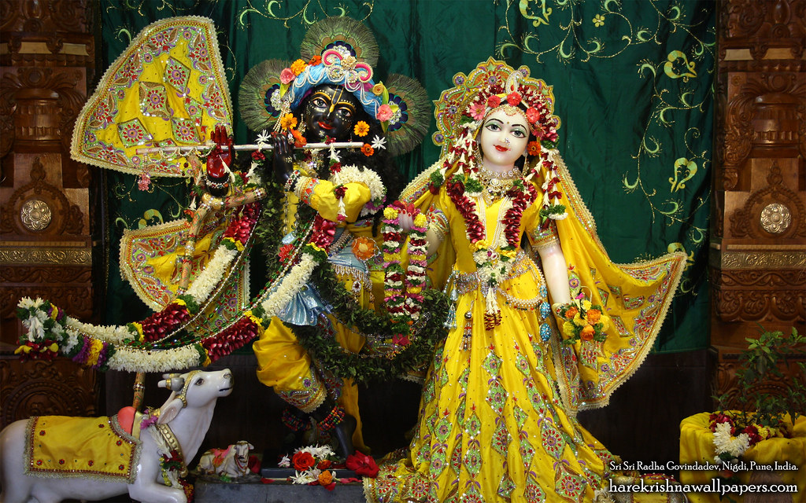
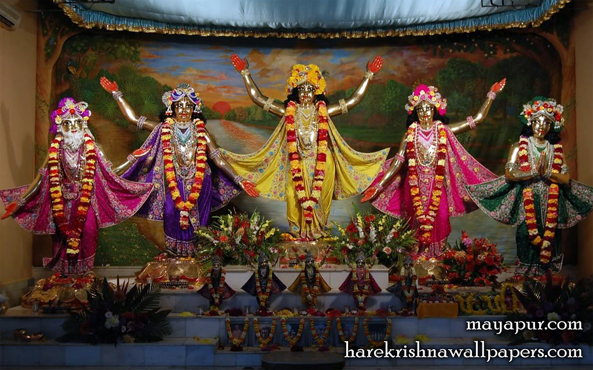

Srivas Angan is a vibrant spiritual center dedicated to spreading the teachings of Lord Sri Krishna and the timeless wisdom of the Bhagavad Gita. Our center provides a peaceful environment where devotees and visitors can engage in devotional activities, kirtans, spiritual discussions, and community service.
Under the inspiring guidance and leadership of R.K. Chaitanya Prabhu, Srivas Angan has become a place of spiritual growth and devotion for people of all ages. Through regular programs, festivals, and educational initiatives, the center continues to nurture Krishna Consciousness in society.
In addition to Srivas Angan, three other devotional centers are also being successfully managed and guided, extending the mission of spiritual education, devotional service, and community welfare to a wider audience.

Spiritual Leader & Mentor
Guiding devotees with wisdom, devotion, and dedication to Krishna Consciousness. Under his leadership, Srivas Angan and other devotional centers continue to inspire countless lives.

Spiritual Leader & Mentor Guiding devotees with wisdom, devotion, and dedication to Krishna Consciousness. Under his leadership, Srivas Angan and other devotional centers continue to inspire countless lives.
To inspire individuals towards a life of devotion, compassion, and self-realization through the teachings of Lord Krishna and the practice of Bhakti Yoga.